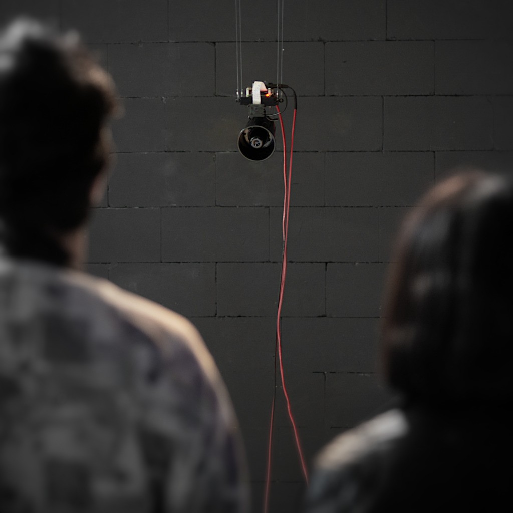
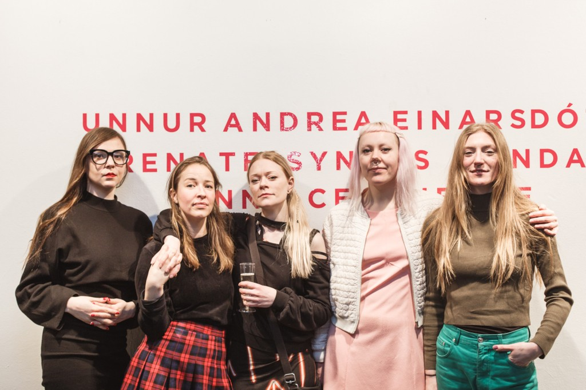
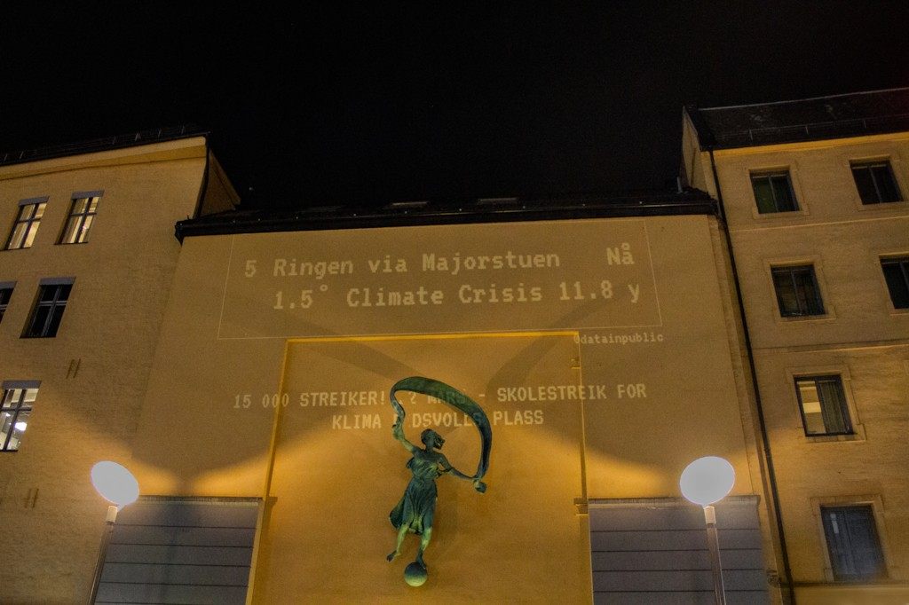
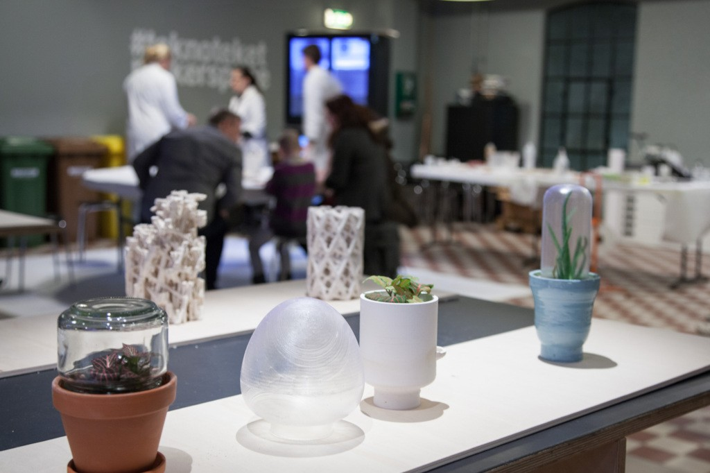
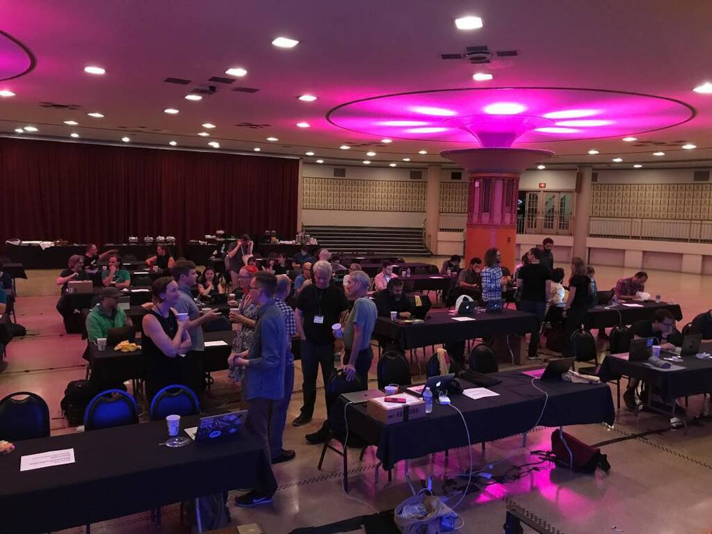

Details
Talks, Workshops, Exhibits & Publications
Boris is an Oslo based artist that works within a wide range of the digital medium. From bending reclaimed technology, to making expressive wearables, to co-opting algorithms for individual introspection.
Contact
Exhibits, Performances & Collections
Past
Migratory Bodies (2024)
- 2025 · Trøndelag Senter for Samtidskunst, Trondheim
- 2025 · Eker Gaard, Beitostølen
- 2025 · Vapaan Taiteen Tila, Helsinki
- 2024 · Oslofjord Triennale, Oslo
We Wade Awake (2024)
- 2025 · Eker Gaard, Beitostølen
- 2025 · Vapaan Taiteen Tila, Helsinki
- 2024 · Mir, Oslo
- 2024 · Deichman Tøyen, Oslo
Bodies of Water (2023)
- 2025 · Hvitsten Salong, Hvitsten
- 2023 · UrbanSoundArt, Fredrikstad
Eerie Descent (2024)
- 2024 · Oslo Fringe, Oslo
- 2024 · Go Figure!, Oslo
Apex Anima & FRZNTE (2021)
- 2024 · Nýló, Reykjavik
- 2023 · Radar, Reykjavik
- 2023 · Vill Vill Vest, Bergen
- 2022 · Desertshore, Vienna
- 2022 · Glasshouse, Rostock
- 2022 · Sonic Morgue, Berlin
- 2021 · Pop-Kultur, Berlin
Site Visits (2021)
- 2022 · Teknisk Museum, Oslo
- 2021 · Bærum Kunsthall, Oslo
Lure of Slowness (2021)
- 2022 · Creativity & Cognition, Venice
- 2022 · Cosmic Rays Film Festival, North Carolina
- 2021 · Asker Museum, Asker
- 2021 · Kunstrom Skogen, Nærsnes
Ontolica (CG, Production)
- 2021 · Midpunkt, Reykjavik
- 2021 · Galleri Blunk, Trondheim

{kind=link}
Machines that judge us (2018)
- 2021 · ADAF 2021, Athens
- 2020 · Oslo Prosjektrom, Oslo
- 2019 · AHO Gallery, Oslo
- 2019 · Kunstnernes Hus, Oslo
- 2018 · V2_ Lab for the Unstable Media, Rotterdam
Life of a Building (2021)
- 2021 · Ottawa Art Gallery, Ottawa
Nothing to See Here (2021)
- 2021 · Linz FMR, Linz

{kind=link}
- 2020 · Meta.Morf X, Online
FAEN Meta.Morf X (producer)
- 2020 · Galleri KiT, Trondheim
FAEN Atelier Nord (producer)
- 2020 · Atelier Nord, Oslo
Neon Cloud (2017)
- 2019 · Y Oslo, Oslo
- 2017 · RSD6, Oslo
- 2017 · Elvelangs, Oslo
Monarch (2015)
- 2019 · Museum of Science and Industry, Chicago
- 2015 · Making Patterns, Eyebeam, New York
- 2015 · Electric Runway, Toronto
- 2015 · ISEA 2015, Vancouver
- 2015 · TEI 2015, Stanford
- 2015 · FASHIONOTES x WEARABLES, Toronto
Expiry Dates (2017)
- 2019 · Museum of Contemporary Art, Toronto
- 2017 · EDIT, Toronto
- 2017 · Facebook, Toronto
Cuerpxs de Luz (2019)
- 2019 · Grace Exhibition Space, New York

{kind=link}
- 2019 · ITP, NYC
- 2019 · Kulturhuset, Oslo
News Interrupted (2019)
- 2019 · Kulturhuset, Oslo
RF 2050 (2019)
- 2019 · Stockholm Design Week, Stockholm
Future Dialogues Now (2019)
- 2019 · Stockholm Furniture & Light Fair, Stockholm
Scroll - A Magic of Maybe (2018)
- 2018 · Live Art Festival, Shanghai
DARaLuz (2018)
- 2018 · Brooklyn Museum, New York
Shadow Capture (2018)
- 2018 · by:Larm 2018, Oslo

{kind=link}
- 2017 · Timelines, Teknisk Museum, Oslo
- 2017 · Timelines, AHO Gallery, Oslo
Quipucamayoc (2016)
- 2016 · cheLA, Cusco & Buenos Aires
Select Positions
Co-Founder
2023 — Now @ Ordinary Objects
Senior Creative Technologist
2022 — 2023 @ Bakken & Bæck
Fremtidspilot & Senior Advisor
2019 — 2021 @ Kulturtanken Kunstlab
Research Assistant
2013 — 2016 @ Social Body Lab
Residencies
- 2023: ITP Camp, ITP NYU, New York.
- 2020: ITP Camp, ITP NYU, Digital.
- 2019: ITP Camp, ITP NYU, New York.
- 2018: Summer Sessions, V2_ Lab for the Unstable Media, Rotterdam.
- 2018: ITP Camp, ITP NYU, New York.
- 2017: ITP Camp, ITP NYU, New York.
- 2015: ITP Camp, ITP NYU, New York.
Talks

{kind=link}
- 2022: Will machines inherit the earth?, Grafill, Oslo
- 2021: Lure of Slowness, Futures of Living Technologies, Oslo
- 2019: DOUBLESPACE, Kulturhuset, Oslo
- 2018: Machines that Judge Us, Clojure/Conj, Durham NC
- 2018: Machines that Judge Us, Notam, Oslo
- 2017: Meatspace, Sketching in Hardware 2017, Detroit
- 2015: Introduction to Clojure, ITP Camp, New York
- 2015: Clojure, Sound, and Wearable Tech, Clojure West 2015, Portland OR
Workshops
- 2019: How Are We Talking About AI?, Workshop, ITP Camp, New York
- 2019: Web-Based Urban Projections, Workshop, ITP Camp, New York
- 2019: Visual Sarcasm, Workshop, ITP Camp, New York
- 2018: Kinetic Body Extensions for Social Interactions, TEI 2018, Stockholm
- 2015: Wearables and Collaborative Performance, Workshop, InterAccess, Toronto
- 2015: Bluetooth LE with the Light Blue Bean, Workshop, ITP Camp, New York
- 2015: Introduction to Bluetooth LE, Workshop, ITP Camp, New York
- 2014: Wearable Electronics, Teaching Assistant, Continuing Education, OCAD University.
Publications
Lee Jones, Greta Grip, Boris Kourtoukov, Varvara Guljajeva, Mar Canet Sola, and Sara Nabil. 2024.
Knitting Interactive Spaces: Fabricating Data Physicalizations of Local Community Visitors with Circular Knitting Machines.
In Proceedings of the Eighteenth International Conference on Tangible, Embedded, and Embodied Interaction (TEI '24). Association for Computing Machinery, New York, NY, USA, Article 11, 1–14. DOI
Elly Vadseth and Boris Kourtoukov. 2022.
Lure of Slowness, Hydrological Rhythms.
In Creativity and Cognition (C&C '22). Association for Computing Machinery, New York, NY, USA, 666–668. DOI
Lee Jones, Greta Grip, and Boris Kourtoukov. 2022.
The Life of a Building: Machine Knitting a Year of Visitor Data and Online Community Participation During a Pandemic.
In Sixteenth International Conference on Tangible, Embedded, and Embodied Interaction (TEI ’22), February 13–16, 2022, Daejeon, Republic of Korea. ACM, New York, NY, USA, 5 pages. DOI
Kate Hartman, Boris Kourtoukov, Izzie Colpitts-Campbell, and Erin Lewis. 2020.
Monarch V2: An Iterative Design Approach to Prototyping a Wearable Electronics Project.
Proceedings of the 2020 ACM Designing Interactive Systems Conference. Association for Computing Machinery, New York, NY, USA, 2215–2227. DOI
Transitions, The PNEK Files, Interview with Zane Cerpina, Boris Kourtoukov, 2019
Kate Hartman, Boris Kourtoukov, and Erin Lewis. 2018.
Kinetic Body Extensions for Social Interactions.
In Proceedings of the Twelfth International Conference on Tangible, Embedded, and Embodied Interaction (TEI ’18). ACM, New York, NY, USA, 736- 739. DOI
12 Tools We Can’t Live Without for Making Wearables, Make Magazine, Kate Hartman & Boris Kourtoukov
Body Boards, Make Magazine, also in print.
Kate Hartman, Jackson McConnell, Boris Kourtoukov, Hillary Predko, and Izzie Colpitts-Campbell. 2015.
Monarch: Self Expression Through Wearable Kinetic Textiles.
In Proceedings of the Ninth International Conference on Tangible, Embedded, and Embodied Interaction (TEI ’15). ACM, New York, NY, USA, 413-414. DOI